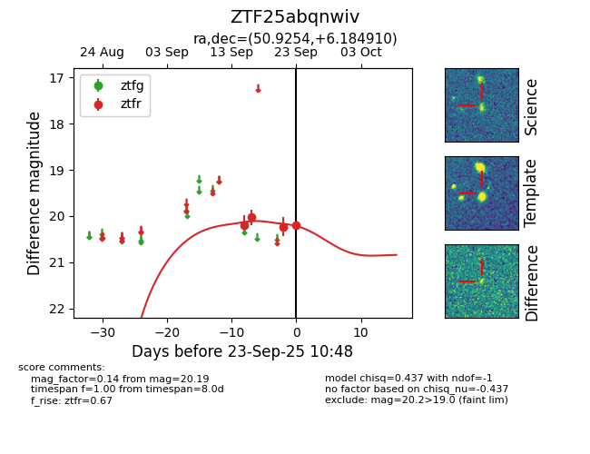
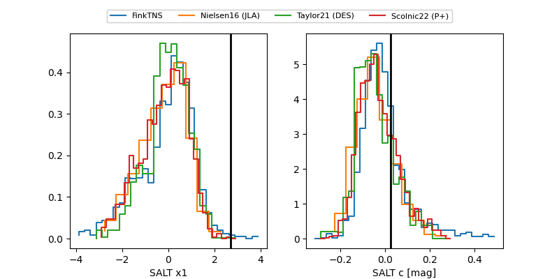

FINK: ZTF25abqnwiv
Lasair: ZTF25abqnwiv
ALeRCE: ZTF25abqnwiv
ZTF25abqnwiv (ztf,fink)
equatorial (ra, dec) = (50.9254,+6.18491)
galactic (l, b) = (176.4796,-40.35218)


last ztfr=20.19
4 ztfr detections